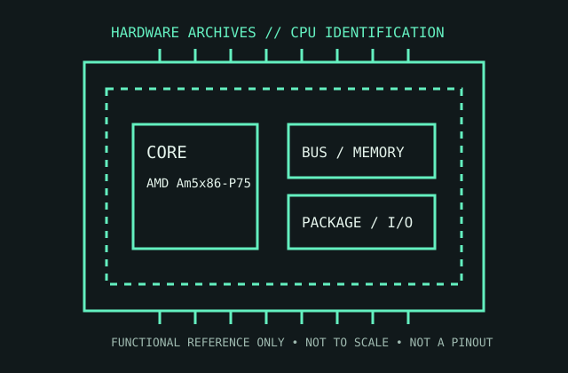

[ 486 GENERATION // IDENTIFIED COMPONENT ]
AMD Am5x86-P75
AMD’s 133 MHz Am5x86-P75 extended 486-class performance with a 4× core clock and a 486-compatible bus interface.

MODEL IDENTIFICATION: AMD Am5x86-P75. Read the full top marking/OPN, speed grade, package, and stepping from the physical part; do not transfer specifications across similarly named revisions.
Recorded specifications
| Cataloged part | AMD Am5x86-P75 |
|---|---|
| Era / family | AMD 5x86 family, 1995; Am5x86-P75 retail designation. |
| Key specifications | 133 MHz internal clock (4× 33 MHz-class bus); 32 KB write-through L1 cache; 486-compatible 32-bit bus; 3.45 V nominal core supply for the specified part; Socket 3 / 168-pin PGA; 486 instruction set. |
| Interface / fit | Designed for Socket 3 boards with the correct voltage and 4× multiplier setting. It is not a Pentium-class Socket 5/7 device; board BIOS, voltage regulation, and cacheable-memory settings matter. |
| Variants / identification | AMD marketed this 133 MHz 486-class product as “P75” to suggest Pentium-comparable class, not Intel Pentium compatibility. Check the exact marking and voltage: related 5x86 versions vary. |
Compatibility and service notes
- Designed for Socket 3 boards with the correct voltage and 4× multiplier setting. It is not a Pentium-class Socket 5/7 device; board BIOS, voltage regulation, and cacheable-memory settings matter.
- AMD marketed this 133 MHz 486-class product as “P75” to suggest Pentium-comparable class, not Intel Pentium compatibility. Check the exact marking and voltage: related 5x86 versions vary.
- Confirm the motherboard has the correct 3.45 V regulator and supports the 4× clock configuration. Record external cache and BIOS settings; board-specific cacheable RAM limits can affect systems with this upgrade.
- Before installation, compare the exact CPU marking with the motherboard maker’s support list, board revision, BIOS minimum, package/socket, power requirements, and memory type. Do not force a package into a socket.
Service & archival record
Confirm the motherboard has the correct 3.45 V regulator and supports the 4× clock configuration. Record external cache and BIOS settings; board-specific cacheable RAM limits can affect systems with this upgrade.
For a collection record, photograph both sides, retain the full model/OPN and date/lot codes, describe package and contact condition, and record the tested motherboard revision, firmware, cooling, memory, and measured operating conditions. Separate measured observations from published limits.
Sources & further reading
- AMD Am5x86 microprocessor data sheet and ordering information — P75 familyModel-specific manufacturer, technical-document, or product-history reference; consult the exact device marking and board revision.
- AMD processor documentation archive — 5x86/P75 technical referencesModel-specific manufacturer, technical-document, or product-history reference; consult the exact device marking and board revision.
- AMD processor product history and model context — AMD historical product archiveModel-specific manufacturer, technical-document, or product-history reference; consult the exact device marking and board revision.
Third-party mirrors or historical document indexes may host manufacturer-authored manuals. Check document revision and exact model marking; board compatibility remains specific to its maker and firmware.